Code
# Only base-R used in this chapter!Load R-libraries
# Only base-R used in this chapter!dnorm()pnorm()Readings.
Gelman et al. (2021) do not cover basic descriptive statistics. But read chapter 2 on data visualization in general, there are many good points that we may come back to. Sections 3.3-3.4 are helpful if you are rusty on linear relationships and logarithms. We will get back to transformations in the chapters on regression. But if you want to jump ahead, please read sections 12.1-12.5 in chapter 12. For probability distributions, see Chapter 3, Section 3.5.
constant = 1.4826 to make the expected value of MAD for a normal distribution equal to its standard deviation, \(\sigma\).Quantiles are cut-off points dividing the data in parts, A quantile define how large proportion of the data that is below (or above) a given cut-off. Two types of quantiles are:
Histograms visualize a frequency distribution with rectangles representing the number (or proportion) of observations in intervals of the same size. Useful to get a feeling for the the shape of a distribution of values. Here a simple example using simulated data:
n <- 1000
# Simulate data by random draws from a skewed distribution (Gamma)
x <- round(100 * rgamma(100, 3, 3))
par(mfrow = c(1, 2)) # Two plots next to each other
# Histogram with 50-unit bins (<50, 50-99, 100-149, ...)
hist(x, breaks = seq(0, 500, by = 50), main = "Bin size = 50")
# Histogram with 10-unit bins (<50, 50-99, 100-149, ...)
hist(x, breaks = seq(0, 500, by = 10), main = "Bin size = 10")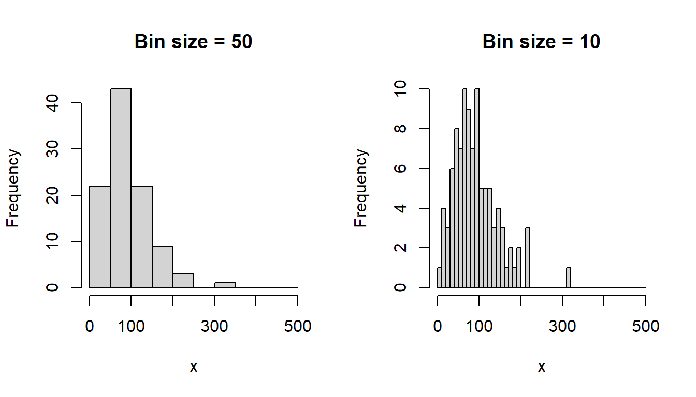
The shape of a histogram depends on the analysts choice of bin size (see figure above). Kernel density plots are less dependent on such choices. (Example taken from chapter 2 of Howell, 2012)
Here’s the general principle:
# Some observations
x <- c(0.0, 1.0, 1.1, 1.5, 1.9, 2.8, 2.9, 3.5)
x[1] 0.0 1.0 1.1 1.5 1.9 2.8 2.9 3.5# Set "error"
ss <- 0.5 # standard deviation of normal
# Plot normal distributions around observed values (+/- error)
xvalues <- seq(-3, 6, by = 0.1)
z <- numeric(length(xvalues))
plot(xvalues, z, ylim = c(0, 2.7), pch = "", xlab = "x",
ylab = "density")
z1 <- z # Empty vetcor to start with, and then loop over vector x
for (j in 1:length(x)){
zout <- dnorm(xvalues, mean = x[j], sd = ss)
lines(xvalues, zout, col = "black")
z1 <- z1 + zout
}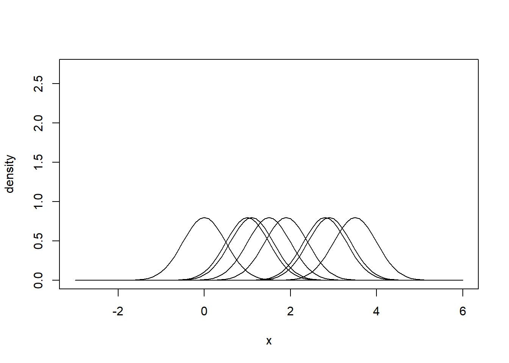
# Sum densities vertically to obtain your kernel density estimator.
# It is an estimator of the true probability density function (PDF) of
# the population from which the data was sampled.
plot(xvalues, z, ylim = c(0, 2.7), pch = "", xlab = "x",
ylab = "density")
lines(xvalues, z1, col = "black")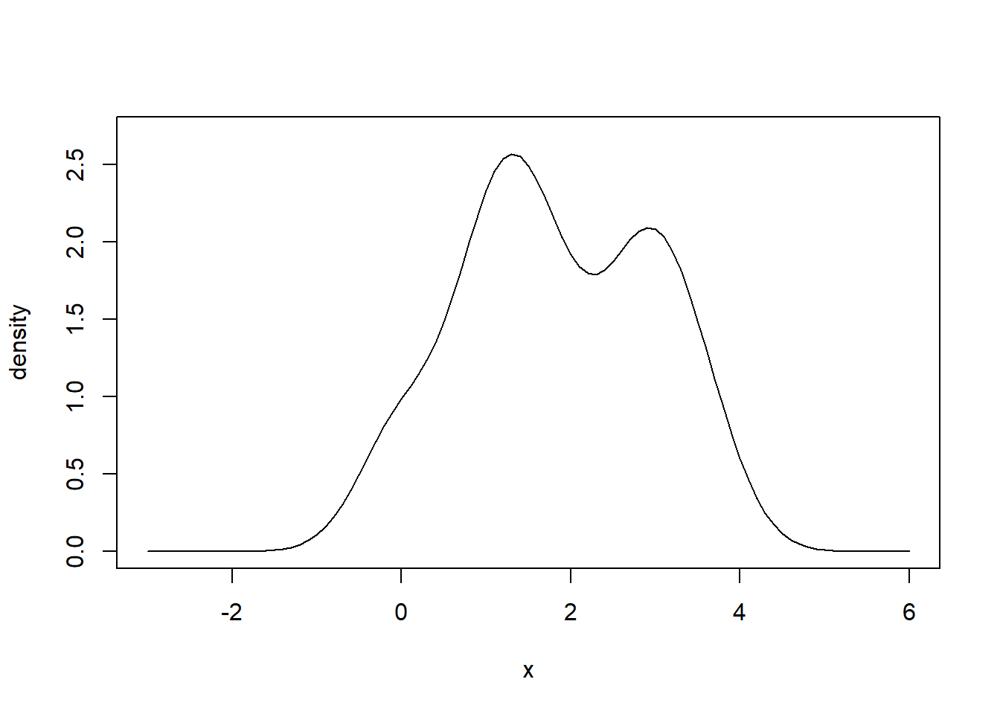
Useful for illustrating the distributions of data. The three horizontal lines of the box show the 75th, 50th (median) and 25th percentiles. Thus, the length of the vertical side of the box is equal to the inter-quartile range (IQR). Data points located more than 1.5 IQR above or below the box are considered outliers and are indicated with symbols. The bottom and top horizontal lines of the figure indicate minimum and maximum value, once outliers have been removed.
set.seed(888)
x <- rt(100, df = 4) # Random numbers from the T-distribution with df = 4
boxplot(x)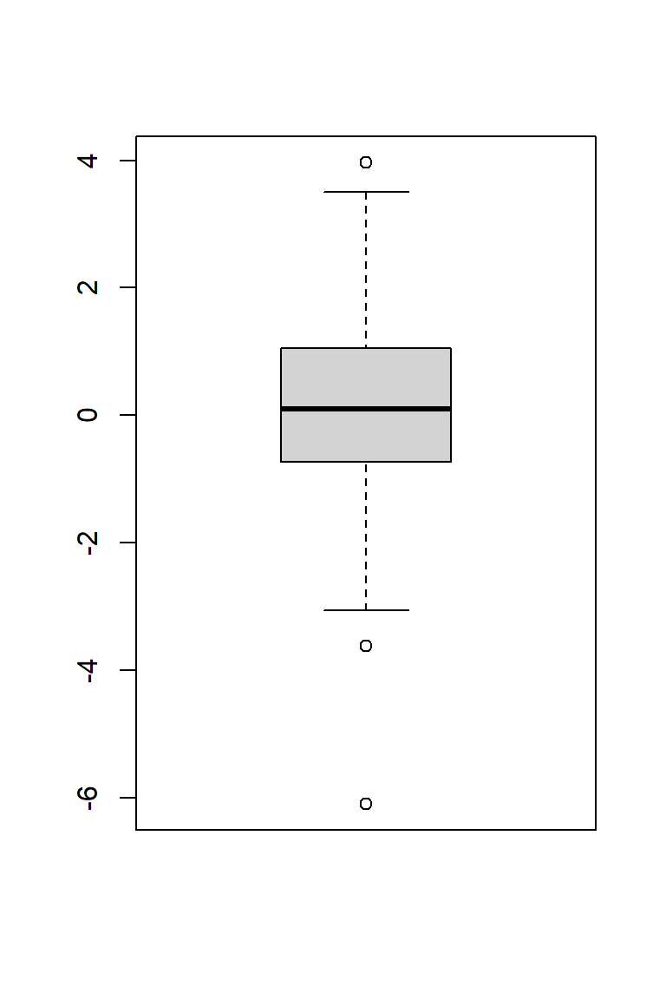
For within-subject data, displaying individual response profiles for each participant can be informative. Below is an example using simulated data from an experiment with 12 participants, each tested under three conditions: A, B, and C.
Simulate data.
# This is a bit advanced, using the multivariate normal to simulate
# varying effect
set.seed(123)
# Experimental setup
n <- 12 # Number of participants
cond <- rep(c("A", "B", "C"), times = n) # Experimental conditions
# True (unobserved) values for each participant condition
library(MASS) # for mvrnorm
Mu <- c(50, 60, 55) # Population mean
s <- 5 # Population sigma of varying effects, assumed the same for all conditions
cv <- s*s*0.7 # Covariance between mu
Sigma <- matrix(c(s^2, cv, cv, # Covariance matrix
cv, s^2, cv,
cv, cv, s^2), nrow = 3, ncol = 3, byrow = TRUE)
truemean <- mvrnorm(n, Mu, Sigma) # Multivariate random number generator
# Observed values
ss <- 3 # SD within subject
obs <- t(apply(truemean, 1, function(x) rnorm(3, mean = x, sd = ss)))
obs <- cbind(1:12, obs)
colnames(obs) <- c("id", "A", "B", "C")
obs <- data.frame(obs)Draw profile plot
# Trick to set limits of y-scale to even 5s
ymin <- floor(min(obs[, 2:4])/5)*5
ymax <- ceiling(max(obs[, 2:4])/5)*5
# Empty plot
plot(1:3, 1:3, pch = "", xlab = "Experimental condition",
ylab = "Outcome", axes = FALSE, xlim = c(0.5, 3.5), ylim = c(ymin, ymax))
# Draw profiles for each id using a for-loop
for (j in obs$id){
idd <- obs[obs$id == j, ]
lines(1:3, idd[, 2:4], lty = 1, col = "grey")
points(1:3, idd[, 2:4], pch = 21, bg = "grey")
}
# Add axis
axis(1, at = c(0.5, 1, 2, 3, 3.5), labels = c("", "A", "B", "C", ""), pos = ymin)
axis(2, at = seq(ymin, ymax, 5), pos = 0.5, las = 2)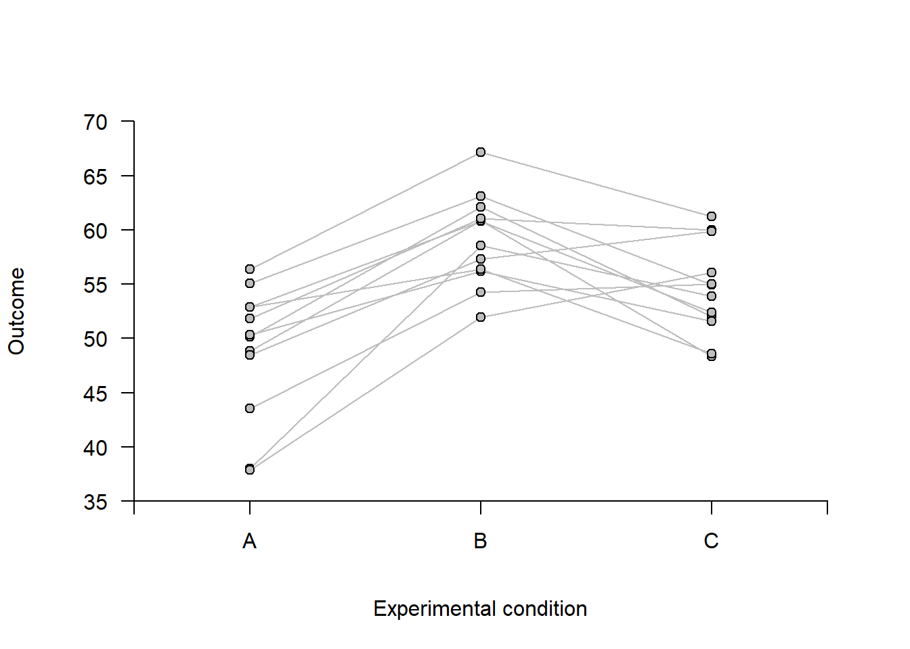
Data from Table 2.1 in Howell (2012). (see also analysis that we did in 2: Data Management and Screening).
The data is from a reaction-time experiment with one participant (Howell). The participant was first presented with a list of digits for a few seconds, e.g.,
1, 5, 7
After the list had been removed, Howell was shown a single digit, e.g.,
2
and was asked to determine whether the single digit was on the previously shown list (in the example above, correct answer would be No).
Code book:
Note that the data only contain trials in which the answer given was correct,
You may download the data file “rt_howell.txt” from Athena or find the data on my Bitbucket repository.
Follow this link to find data Save (Ctrl+S on a pc) to download as text file
Once you have downloaded the file and made sure it is in the same folder as your current R-session (you may have done this already last time). To check from where R is working, run getwd() in the Console. Use setwd(dir) to change the directory of the current session, where dir is a character string. Example setwd("C:/Users/MATNI/Documents/Stat1/datafiles") would set R to work in the folder datafiles on my computer.
# Import data. Note that I have chosen to store the data in a subfolder called
# "datasets"" located in the directory from which R is working)
d <- read.table("datasets/rt_howell.txt", header = TRUE, sep = ",")From last time: Use box plots to inspect data
# Boxplot (there are many ways to make nicer boxplots)
par(mfrow = c(1, 2)) # Two plots next to each other
# Reaction time, all data
boxplot(d$rt, xlab = "All trials", ylab = "Reaction time (ms)")
# Reaction time, per condition
boxplot(d$rt ~ d$yesno + d$nstim, col = c('green', 'red'),
xlab = "Stimulus condition", ylab = "Reaction time (ms)")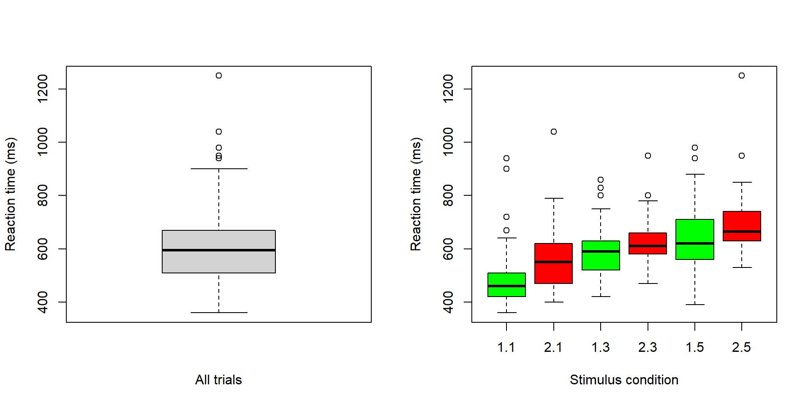
Here a look specifically at the two stimulus conditions with the longest list (condition 1.5, and 2.5 in the boxplot above)
To simplify the following, this code make a reduced data frame g with only the longest-list conditions.
g <- d[d$nstim == 5, ] # Reduce data frame to simplify the following workHistogram and density plot overlays for the “Yes” trials.
# Histogram for yes trials
hist(g$rt[g$yesno == 1], breaks = seq(275, 1400, by = 20),
freq = TRUE, main = '5-item list, Yes-trials', xlab = "Reaction time (ms)")
# Same histogram, but note y-axis and argument freq = FALSE
hist(g$rt[g$yesno == 1], breaks = seq(275, 1400, by = 20),
freq = FALSE, main = '', xlab = "Reaction time (ms)")
# Add density for yes trials
dens_yes <- density(g$rt[g$yesno == 1])
polygon(dens_yes, col = rgb(0, 1, 0, 0.5))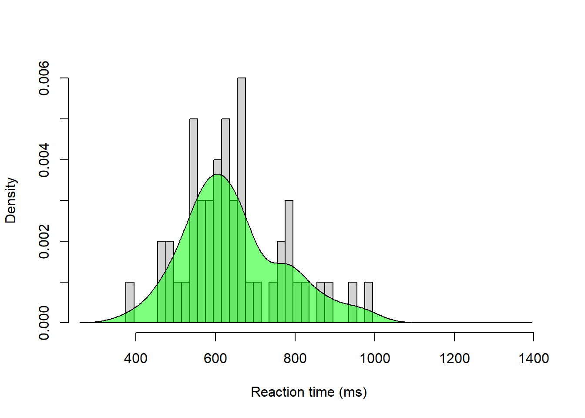
Histogram overlays for “Yes” and “No” trials
# Blank histogram (note argument lty = 'blank', col = "white" to make bars
# invisible)
hist(g$rt, breaks = seq(275, 1400, by = 20), lty = 'blank', col = "White",
main = '', xlab = "Reaction time (ms)")
# Add histogram for Yes trials
hist(g$rt[g$yesno == 1], breaks = seq(275, 1400, by = 20),
add = TRUE, col = rgb(0, 1, 0, 0.5))
# Add histogram for No trials
hist(g$rt[g$yesno == 2], breaks = seq(275, 1400, by = 20),
add = TRUE, col = rgb(1, 0, 0, 0.5))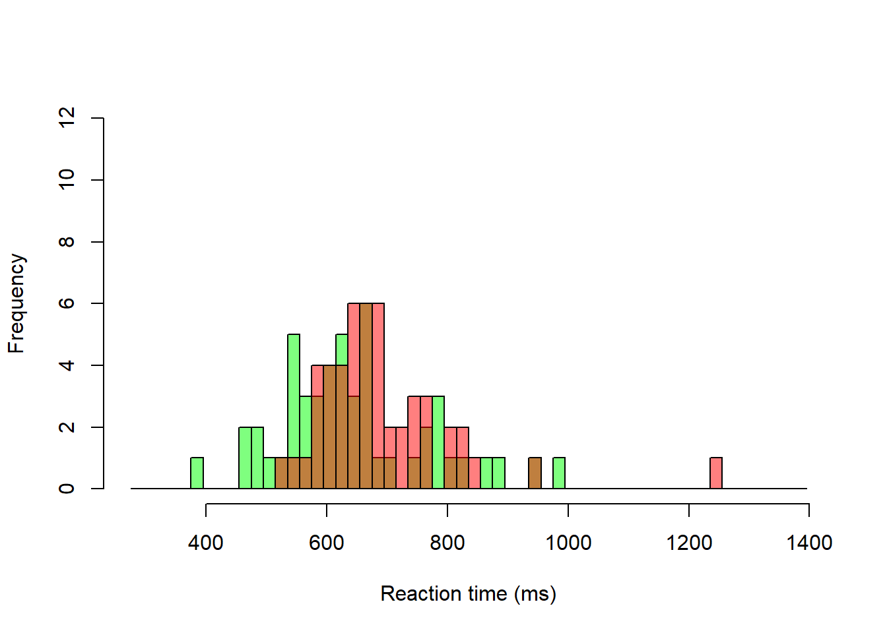
Density overlays for “Yes” and “No” trials.
# Blank histogram (note argument lty = 'blank')
hist(g$rt, breaks = seq(275, max(d$rt) + 50, by = 20), freq = FALSE, lty = 'blank',
col = "white", main = '', xlab = "Reaction time (ms)")
# Add density for Yes trials
dens_yes <- density(g$rt[g$yesno == 1])
polygon(dens_yes, col = rgb(0, 1, 0, 0.5))
# Add density for No trials
dens_no <- density(g$rt[g$yesno == 2])
polygon(dens_no, col = rgb(1, 0, 0, 0.5))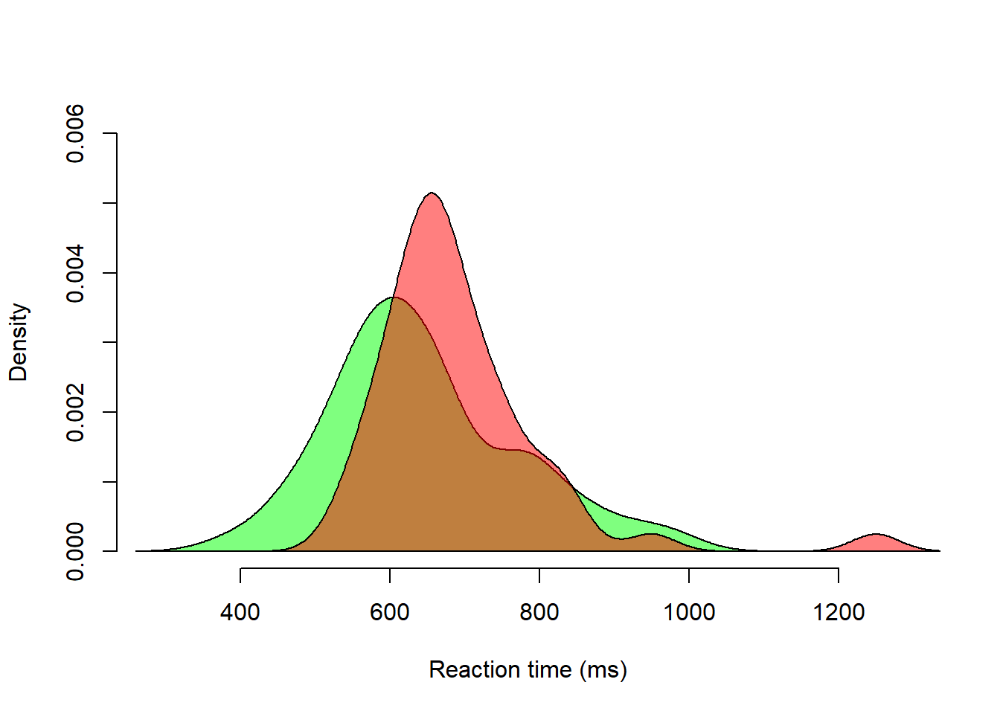
Below some descriptive statistics for the 5-item list and No-trials (red density curve above)
Boxplot
x <- g$rt[g$yesno == 2] # Put data in vector called x, to simplify things
boxplot(x)
mtext("5-item list, No-trials", 3, line = 0.5) # Add heading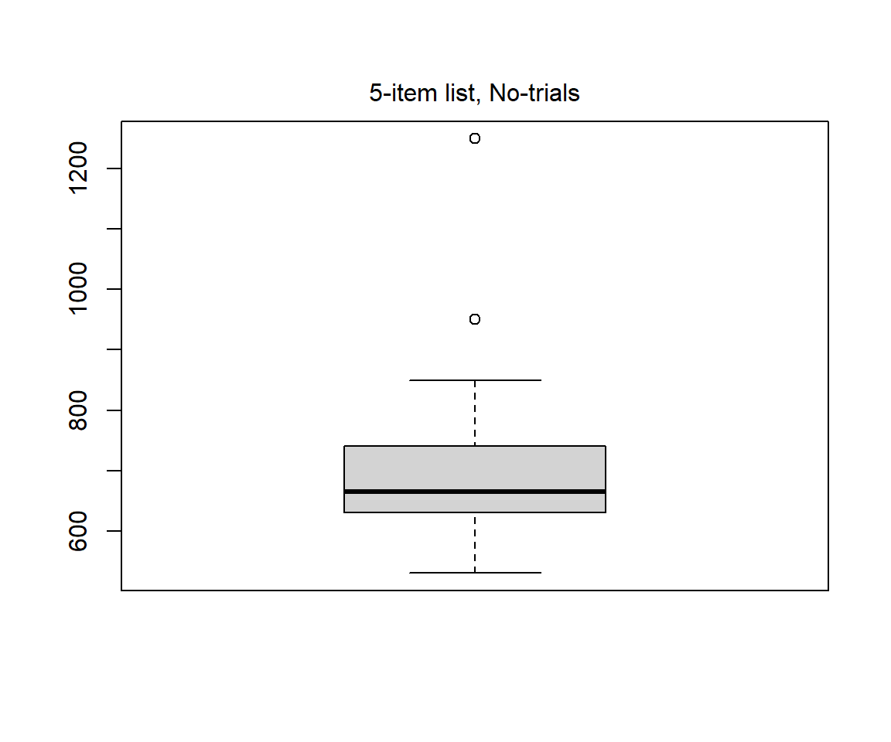
Quantiles
summary(x) # Give five point summary, including quartiles Min. 1st Qu. Median Mean 3rd Qu. Max.
530.0 630.0 665.0 691.2 735.0 1250.0 Central tendency (or Location)
# Mean
m <- mean(x, na.rm = TRUE)
m_rmout <- mean(x[x < 900], na.rm = TRUE) # Remove values > 900 ms
# Median
mdn <- median(x, na.rm = TRUE)
mdn_rmout <- median(x[x < 900], na.rm = TRUE) # Remove values > 900 ms
location <- c(m = m, m_rmout = m_rmout, mdn = mdn, mdn_rmout = mdn_rmout)
round(location, 1) m m_rmout mdn mdn_rmout
691.2 674.2 665.0 660.0 Variation (or Dispersion or Scale)
# Standard deviation
std <- sd(x, na.rm = TRUE)
std_rmout <- sd(x[x < 900], na.rm = TRUE) # Remove values > 900 ms
# Inter-quartile range
iqr <- IQR(x, na.rm = TRUE)
iqr_rmout <- IQR(x[x < 900], na.rm = TRUE) # Remove values > 900 ms
# Median absolute deviation
# NOTE: default for mad() is with correction factor
mad <- mad(x, na.rm = TRUE)
mad_rmout <- mad(x[x < 900], na.rm = TRUE) # Remove values > 900 ms
dispersion <- c(std = std, std_rmout = std_rmout,
iqr = iqr, iqr_rmout = iqr_rmout,
mad = mad, mad_rmout = mad_rmout)
round(dispersion, 1) std std_rmout iqr iqr_rmout mad mad_rmout
116.1 75.3 105.0 92.5 81.5 74.1 Linear transformations changes the mean or the standard deviation or both of a set of values but will preserve the shape of the distribution of values. A kernel density plot would therefore have the same shape for a distribution of values as for a linear transformations of the same values.
Linear transformations are applied for different reasons, some examples below:
The figure below illustrates the preserved shape of data distributions after linear transformations of a set of (simulated) temperature measurements. But first a scatter plot matrix to verify that the variables indeed are linearly related.
set.seed(999)
# A thousand temperature measurements, all around 60 F
fahr <- rnorm(1000, mean = 60, sd = 2)
# Transform to Celsius
celc <- (5/9) * (fahr - 32)
# z-transform
z <-(fahr - mean(fahr))/sd(fahr)
# Scatter plot matrix, just to show that they linearly related
pairs(~ fahr + celc + z)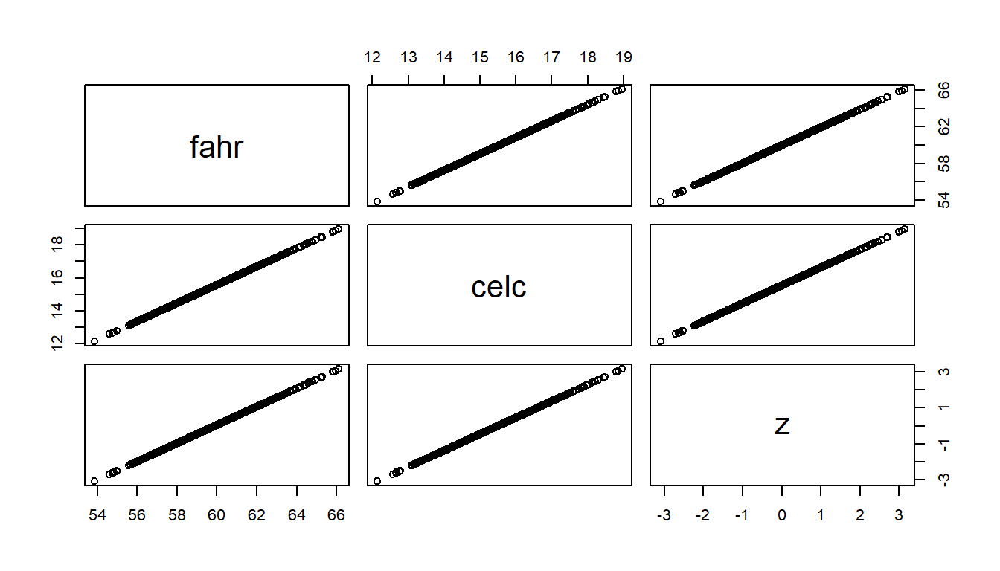
# Density plots in three panels
par(mfrow = c(1, 3))
plot(density(fahr), main = "Fahrenheit", xlab = "Temperatur [degrees Fahrenheit]")
plot(density(celc), main = "Celcius", xlab = "Temperatur [degrees Celcius]")
plot(density(z), main = "z-score", xlab = "Temperatur [standard deviation]")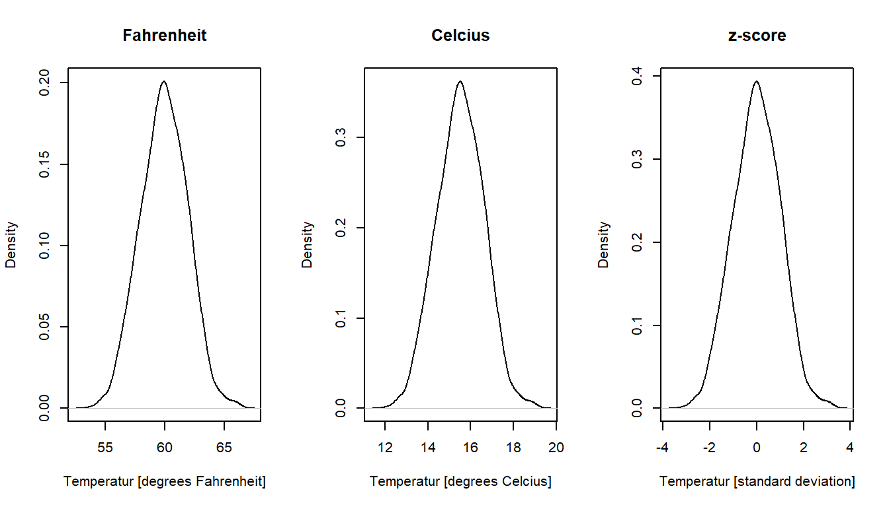
Unlike linear transformations, non-linear transformations will change the shape of the distribution. We will talk more about reasons for non-linear transformations in regression analysis. Here I will only mention the log-transform, often used to handle skewed distributions. Reaction time is an example of a variable that typically has a positive skew, and therefore it is common to apply a log transform. Below illustrated using the reaction time data in rt_howell.txt.
Linear and log-transformed reaction times for No-trials (yesno = 2) of the five-item list (nstim = 5).
rt <- d$rt[d$yesno == 2 & d$nstim == 5]
log_rt <- log(rt) # Natural log
par(mfrow = c(1, 2)) # Two plots
# Linear: histogram with density
hist(rt, breaks = seq(275, 1400, by = 25),
freq = FALSE, main = "linear")
dens_yes <- density(rt)
polygon(dens_yes, col = rgb(1, 0, 0, 0.5))
# Log: histogram with density
hist(log_rt, breaks = seq(log(275), log(1400), by = 0.05),
freq = FALSE, main = "natural log")
dens_yes <- density(log_rt)
polygon(dens_yes, col = rgb(1, 0, 0, 0.5))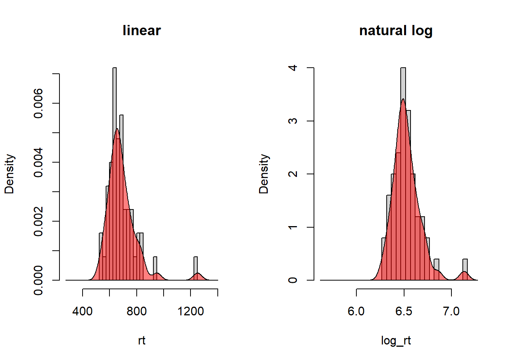
Maybe not a big difference in shape, but note that the outlier in the left panel (around 1200 ms) has moved closer to the main bulk of the data in the right panel.
The base of the log doesn’t matter for the shape of the distribution, it will remain the same. This because log-transformed values of different bases are linearly related, for example, \(log_{10}(x) = \frac{log_e(x)}{log_e(10)}\), and as we saw above, linear transformations doesn’t change the shape of a distribution.
Gelman et al. (2021) define “probability distribution” in an informal way that also defines “random variable”:
A probability distribution corresponds to an urn with a potentially infinite number of balls inside. When a ball is drawn at random, the “random variable” is what is written on this ball.
Gelman et al. (2021), Section 3.5, p. 40
For discrete variables, there is a finite set of balls (outcomes) in proportion to their probability (so twice as many balls for an outcome twice as probable as another outcome). For continuous variables, the set is infinite, because there are infinitely many numbers in any interval of a continuous variable. Still, there will be more balls with numbers in a given interval than in another.
We will focus on the Normal distribution in this course, but let’s start with the Binomial distribution.
The Binomial distribution may be thought of as the “coin-tossing” distribution: It gives you the probability of the number of outcomes classified as “successes” (e.g., “heads”) in \(n\) independent trials with two outcomes (e.g., a coin toss), each with success probability \(p\) (\(p = 0.5\) for a fair coin, \(p \neq 0.5\) for an unfair coin).
Notation
The notation \(Y \sim Binomial(n, p)\) means that the random variable \(Y\) is distributed as the Binomial distribution with \(n\) independent trials, each with probability \(p\) of success. Y can take on the values 0, 1, …, n.
A special case of this distribution occurs when \(n = 1\), known as the Bernoulli distribution. The notation \(Y \sim Bernoulli(p)\) means that \(Y\) is distributed as the Binomial distribution with \(n = 1\), where \(Y\) can take on only the values 0 or 1.
\(P(Y = y) = \binom{n}{y}p^y(1-p)^{n-y}\) gives the probability of \(y\) successes in \(n\) trials, where \(\binom{n}{y}\) is the number of ways you can draw \(y\) objects from a set of \(n\) objects, if order doesn’t matter (try out the choose() function in R).
Expected value (mean value): \(E(Y) = np\)
Standard deviation: \(SD(Y) = \sqrt{np(1-p)}\)
Example: Calculate the probability of two successes in three trials, if \(p = 0.6\)
\(Y \sim Binomial(n = 3, p = 0.6)\)
\(P(Y = 2) = \binom{3}{2}p^2(1-p)^{1} = 3 * 0.6 * 0.6 * 0.4 = 0.432\)
Calculate by hand in R
# Using equation
p <- 0.6
yprob <- choose(3,2) * p^2 * (1-p)^1
yprob [1] 0.432# Using R's binomial function
dbinom(x = 2, size = 3, p = 0.6)[1] 0.432Probability mass function (PMF)
A Probability mass function gives the probability for each outcome of a discrete random variable. It sums to one.
Example: Plot PMF for n = 19, and p = 0.2, 0.5, 0.8
n <- 19
p <- c(0.2, 0.5, 0.8)
# Panels next to each other
par(mfrow = c(1, 3))
# Plots
binpmf <- function(n = 19, p) {
y <- 0:n # Possible outcomes
m1 <- dbinom(y, size = n, prob = p)
plot(y, m1, type = 'h', xlab = "y",
ylab = "P(Y = y)", ylim = c(0, 0.3), lwd = 3)
mtext(sprintf("n = %d, p = %0.1f", n, p), 3, cex = 1)
lines(c(-1, n+1), c(0, 0), col = "grey")
}
binpmf(p = p[1])
binpmf(p = p[2])
binpmf(p = p[3])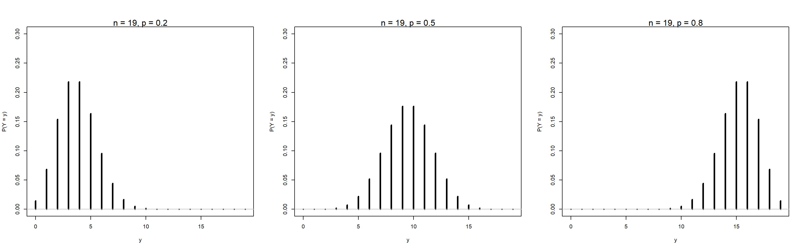
Cumulative distribution function (CDF)
The cumulative distribution function (CDF) gives the probability that a random variable is less than or equal to a specific value.
Example: Plot CDF for n = 19, and p = 0.2, 0.5, 0.8
n <- 19
p <- c(0.2, 0.5, 0.8)
# Panels next to each other
par(mfrow = c(1, 3))
# Plots
bincdf <- function(n = 19, p) {
y <- 0:n # Possible outcomes
m1 <- pbinom(y, size = n, prob = p)
plot(y, m1, type = 's', xlab = "y",
ylab = "P(Y <= y)", ylim = c(0, 1), lwd = 1.5)
mtext(sprintf("n = %d, p = %0.1f", n, p), 3, cex = 0.8)
lines(c(-1, n+1), c(0, 0), col = "grey")
}
bincdf(p = p[1])
bincdf(p = p[2])
bincdf(p = p[3])
The Binomial distribution becomes approximately normal as \(n\) gets very large. Here illustrated for \(p\) = 0.2 and \(n\) = 6, 60, and 600.
n <- c(6, 60, 600)
p <- 0.2
# Panels next to each other
par(mfrow = c(1, 3))
# Plots
binpmf2 <- function(n, p, nmin, nmax) {
y <- nmin:nmax # Possible outcomes
m1 <- dbinom(y, size = n, prob = p)
plot(y, m1, type = 'h', xlab = "y",
ylab = "P(Y = y)", ylim = c(0, max(m1)), lwd = 1)
mtext(sprintf("n = %d, p = %0.1f", n, p), 3, cex = 0.8)
lines(c(-1, n+1), c(0, 0), col = "grey")
}
binpmf2(n = n[1], p = p, nmin = 0, nmax = 6)
binpmf2(n = n[2], p = p, nmin = 0, nmax = 30)
binpmf2(n = n[3], p = p, nmin = 85, nmax = 155)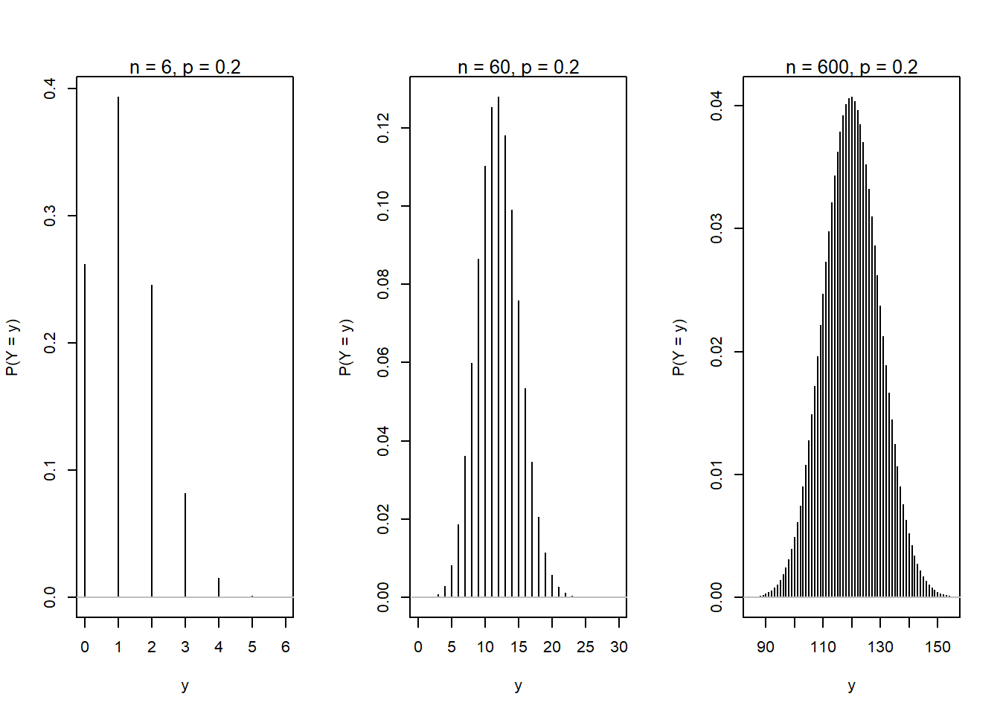
The sum of many small independent random variables will be approximately distributed as the Normal distribution (this follows from the Central Limit Theorem).
Notation
\(Y \sim N(\mu, \sigma)\), random variable Y is distributed as a normal distribution with location (mean) \(\mu\) and scale (sd) \(\sigma\) (Note, the second parameter is often given as the variance \(\sigma^2\).)
Example: Y is scores on an IQ-test, normally distributed with mean = 100, sd = 15: \(Y \sim N(\mu=100, \sigma=15)\)
Probability density function (PDF)
For a discrete variable, the probability mass function (PMF) sums to one (see examples above). For a continuous variable, the probability density function (PDF) has an area under the curve equal to one.
iq <- seq(from = 50, to = 150, by = 1)
iqdens <- dnorm(iq, mean = 100, sd = 15)
plot(iq, iqdens, type = 'l', xlab = "y [IQ-score]", ylab = "density")
lines(c(40, 160), c(0, 0), col = "grey")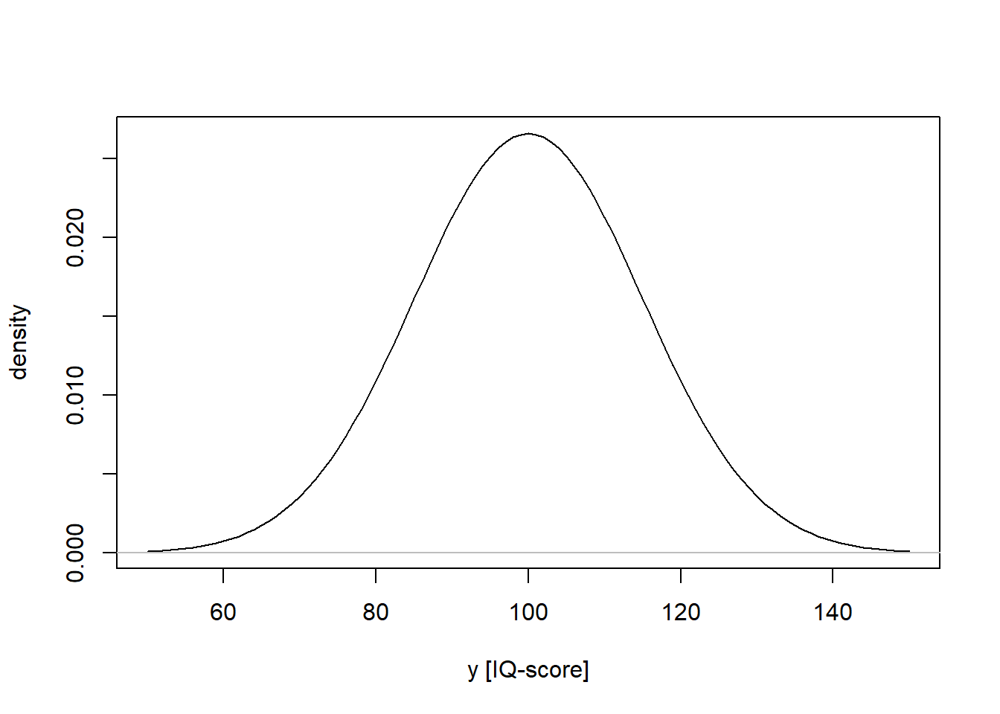
NOTE: Density is not the same as probability. It can be greater than 1!
# Denisty for uniform(0, 0,5)
x <- seq(from = -0.1, to = 0.6, by = 0.0001)
xdens <- dunif(x, min = 0, max = 0.5)
plot(x, xdens, type = 'l', xlab = "x", ylab = "density", ylim = c(0, 2.2))
lines(c(-0.2, 0.7), c(0, 0), col = "grey")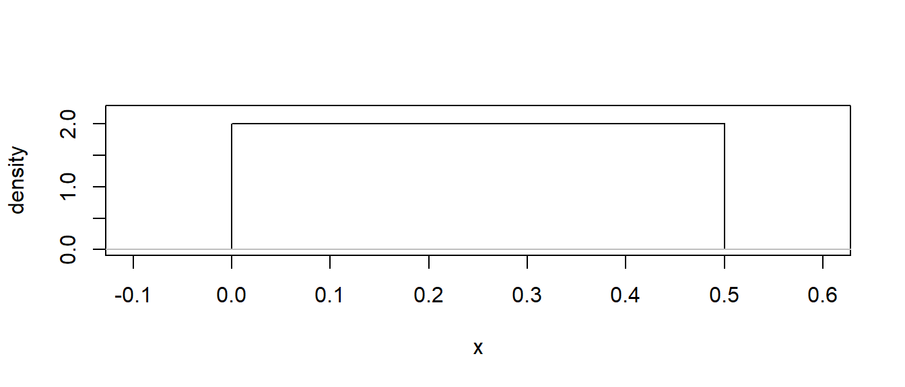
What is the probability that a randomly selected individual has an IQ-score of exactly 100, if \(IQ \sim N(\mu=100, \sigma=15)\)? The probability correspond to an area under the curve (PDF) of the normal distribution. The answer to the question depends on what we mean with “exactly”. If we really mean it, as in \(100.000000...\), then the answer is \(P(IQ = 100.000...) = 0\), because the area under the curve has zero width. But I guess that IQ-scores are measured without decimals, if so, \(IQ = 100\) can be interpreted as \(99.5 < IQ < 100.5\). This is an interval, and an area under the curve can be calculated: \(P \approx .03\).
par(mfrow = c(1, 2))
# Draw PDF, and add line for mu = 100.0000...
iq <- seq(from = 50, to = 150, by = 1)
iqdens <- dnorm(iq, mean = 100, sd = 15)
plot(iq, iqdens, type = 'l', xlab = "y [IQ-score]", ylab = "density",
xlim = c(70, 130))
lines(c(40, 160), c(0, 0), col = "black")
lines(c(100, 100), c(0, dnorm(100, mean = 100, sd = 15)),
col = "grey", lwd = 0.2, lty = 3)
# Draw PDF, and add area for 99.5 < mu < 100.5
iq <- seq(from = 50, to = 150, by = 1)
iqdens <- dnorm(iq, mean = 100, sd = 15)
plot(iq, iqdens, type = 'l', xlab = "y [IQ-score]", ylab = "density",
xlim = c(70, 130))
lines(c(40, 160), c(0, 0), col = "black")
mm <- seq(99.5, 100.5, 0.01)
d <- dnorm(mm, mean = 100, sd = 15)
polygon(x = c(mm, rev(mm)), y = c(rep(0, length(d)), rev(d)),
col = rgb(0, 0, 0, 0.1), border = FALSE)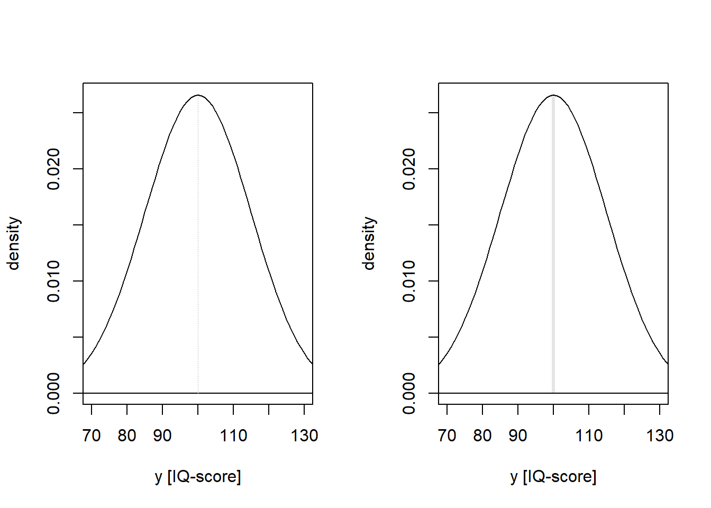
Calculate probability (area under the curve):
# P(mu == 100)
pnorm(100, mean = 100, sd = 15) - pnorm(100, mean = 100, sd = 15)[1] 0# P(mu > 99.5 | mu < 100.5)
pnorm(100.5, mean = 100, sd = 15) - pnorm(99.5, mean = 100, sd = 15)[1] 0.02659123Cumulative distribution function (CDF)
The CDF has the same definition for discrete and continuous variables: It gives the probability that a random variable is less than or equal to a specific value of a random variable.
iq <- seq(from = 50, to = 150, by = 1)
iqcdf <- pnorm(iq, mean = 100, sd = 15)
plot(iq, iqcdf, type = 'l', xlab = "y [IQ-score]", ylab = "P(Y < y)")
lines(c(40, 160), c(0, 0), col = "grey")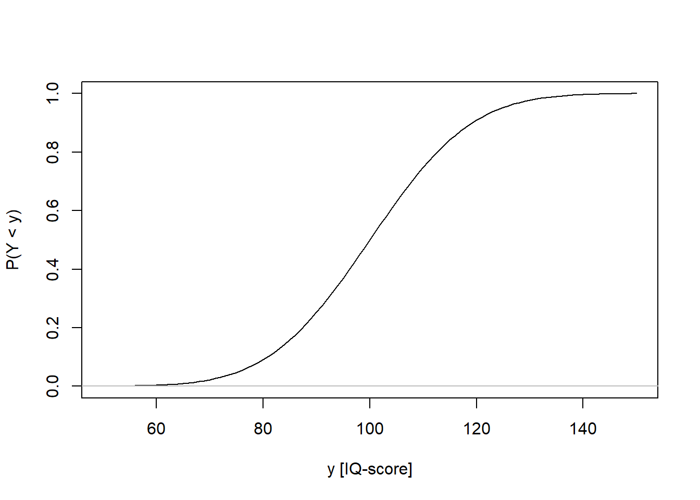
Location and scale of normal distribution
This plot shows three normal distributions with…
Left panel: Same location (mean), different scale (standard deviation)
Right panel: Different location, same scale
x <- seq(from = 0, to = 100, by = 1)
par(mfrow = c(1, 2))
# Different scales, same location
plot(x, dnorm(x, 50, 10), ylim = c(0, 0.2), pch = "", xlab = "x", ylab = "density")
lines(x, dnorm(x, 50, 2), col = "red")
lines(x, dnorm(x, 50, 10))
lines(x, dnorm(x, 50, 20), col = "blue")
# Different location, same scale
plot(x, dnorm(x, 50, 10), ylim = c(0, 0.2), pch = "", xlab = "x", ylab = "density")
lines(x, dnorm(x, 30, 3), col = "red")
lines(x, dnorm(x, 50, 3))
lines(x, dnorm(x, 55, 3), col = "blue")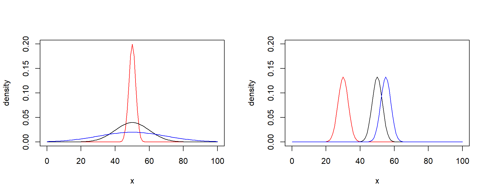
Remember that linear transformations doesn’t change the shape of distributions. The standard normal is just a linear transformation (z-scores) of another normal distribution with the purpose of setting \(\mu = 0\) and \(\sigma = 1\).
\(Y \sim N(\mu, \sigma)\) Original (non-standard) normal,
\(Z = (Y - \mu)/\sigma\) Linear transformation,
\(Z \sim N(0, 1)\) Standard normal.
par(mfrow = c(1, 2))
z <- seq(-4, 4, 0.1)
# PDF
dd <- dnorm(z)
plot(z, dd, type = 'l', ylab = "density")
lines(c(-5, 5), c(0, 0), col = "grey")
mtext("PDF", 3, cex = 0.8)
# CDF
dd <- pnorm(z)
plot(z, dd, type = 'l', ylab = "probability, P(Z <= z)")
lines(c(-5, 5), c(0, 0), col = "grey")
mtext("CDF", 3, cex = 0.8)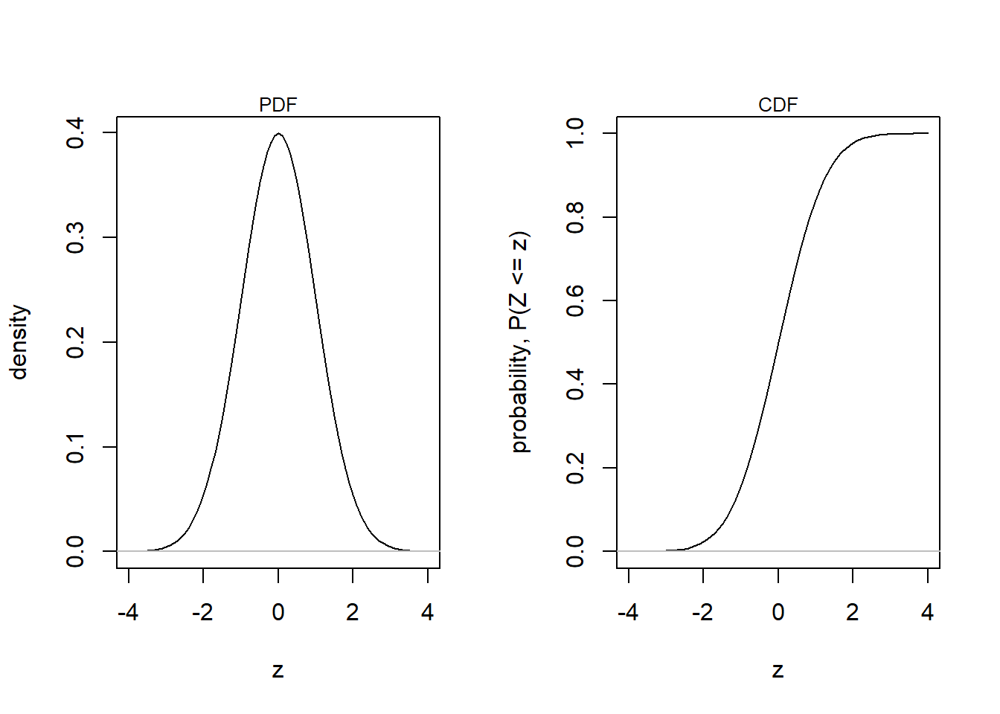
The 68-95-99.7 rule, also known as the empirical rule, describes the distribution of data in a normal distribution. According to this rule:
Approximately 68 % of the data falls within one standard deviation of the mean. Put equivalently, the probability that a random observation, \(x\) falls within one standard deviation of the mean is approximately 0.68, that is, \(Pr(\mu - \sigma < x < \mu + \sigma) \approx 0.68)\)
About 95 % of the data lies within two standard deviations of the mean.
About 99.7 % of the data is found within three standard deviations of the mean.
For the standard normal, \(N(\mu = 0, \sigma = 1)\), these three intervals corresponds to the intervals [-1, 1], [-2, 2], and, [-3, 3], respectively.
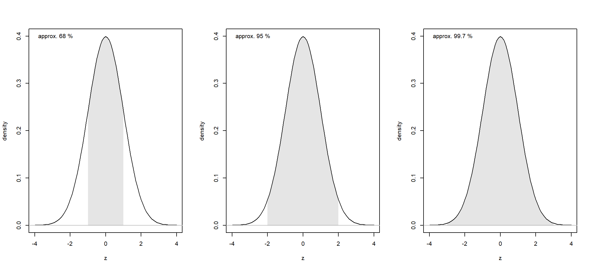
In R, you can calculate the exact probabilities like this:
# Calculate (pm1sd for +/- 1 sd, etc.)
pm1sd <- pnorm(1) - pnorm(-1)
pm2sd <- pnorm(2) - pnorm(-2)
pm3sd <- pnorm(3) - pnorm(-3)
# Round and print
round(c(pm1sd = pm1sd, pm2sd = pm2sd, pm3sd = pm3sd), 5) pm1sd pm2sd pm3sd
0.68269 0.95450 0.99730 Example from Gelman et al. (2021), Fig. 3.6:
Assume that height is normally distributed, with different means for men and women:
set.seed(999)
male <- rnorm(5e4, 180, 8)
female <- rnorm(5e4, 168, 8)
combined <- c(male, female)
# Blank histogram (note argument lty = 'blank')
hist(male, breaks = seq(120, 230, by = 20), freq = FALSE, lty = 'blank',
col = "white", main = '', xlab = "Height (cm) ", ylim = c(0, 0.06))
# Add density for Yes trials
dens_male <- density(male)
polygon(dens_male, col = rgb(0, 1, 0, 0.5))
# Add density for No trials
dens_female <- density(female)
polygon(dens_female, col = rgb(1, 0, 0, 0.5))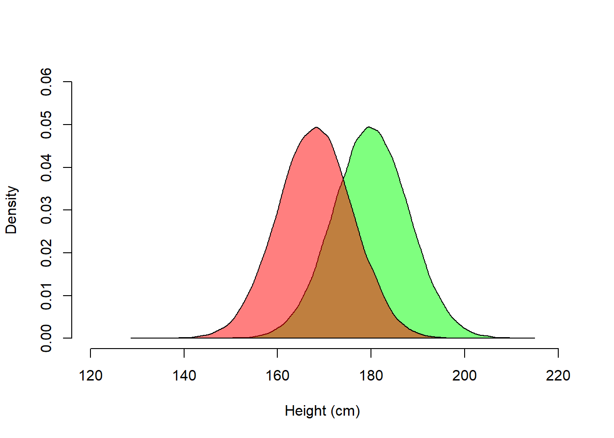
Height in the combined population of men and women is however not normally distributed.
# Blank histogram (note argument lty = 'blank')
hist(combined, breaks = seq(120, 230, by = 20), freq = FALSE, lty = 'blank',
col = "white", main = '', xlab = "Height (cm) ", ylim = c(0, 0.06))
# Add density for Yes trials
dens_combined <- density(combined)
polygon(dens_combined, col = rgb(0, 0, 1, 0.5))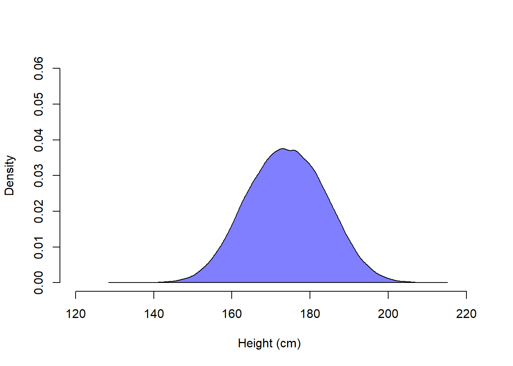
The density plot for the combined population looks normal, but actually it is not. If normally distributed, about 84 % of values are less than 1 standard deviation above the mean. This is true for our simulated male and female populations, but not for the combined population.
# Exact probability of x < 1, if X ~ N(mean = 0, sd = 1)
pnorm(1) [1] 0.8413447# Estimate from our simulated male population
mean(male < mean(male) + sd(male))[1] 0.8416# Estimate from our female popualtion
mean(female < mean(female) + sd(female)) [1] 0.84062# Estimate from the combined popualtion
mean(combined < mean(combined) + sd(combined))[1] 0.83395A common method for evaluating normality is to visualize using so called QQ-plots (points fall on the red line if the data is perfectly normal). QQ-plots are not part of the course, but I use them here to drive home the point that the (simulated) combined population (vector combined) is not normally distributed.
# QQ-plot
zmale <- (male - mean(male))/sd(male)
zfemale <- (female - mean(female))/sd(female)
zcombined <- (combined - mean(combined))/sd(combined)
ylim <- c(-4, 4)
par(mfrow = c(1, 3))
qqnorm(zmale, main = "Population male weight, z-score", cex = 0.7, ylim = ylim)
qqline(zmale, col = "red")
qqnorm(zfemale, main = "Population female weight, z-score", cex = 0.7, ylim = ylim)
qqline(zfemale, col = "red")
qqnorm(zcombined, main = "Population combined, z-score ", cex = 0.7, ylim = ylim)
qqline(zcombined, col = "red")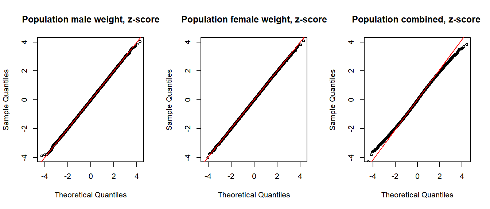
Practice problems are labeled Easy (E), Medium (M), and Hard (H), (as in McElreath (2020)).
4E0. Identify two advantages and two disadvantages of using the arithmetic mean compared to the median as sample statistics for measuring central tendency.
4E1. The median absolute deviation (MAD) is often multiplied by a constant, why and what is the constant?
Note: In the regression outputs from rstanarm::stan_glm(), they call MAD multiplied by this constant for MAD_SD.
4E2. Below a frequency table of number of children (0, 1, 2, 3, or 4) in a sample 200 families.
Calculate by hand the following statistics for number of children in these families:
set.seed(123)
n_child <- sample(0:4, size = 200, replace = TRUE, prob = c(5, 10, 1, 1, 0))
n_child_f <- factor(n_child, levels = 0:4)
table(Children = n_child_f)Children
0 1 2 3 4
54 119 16 11 0 4E3. Below is a boxplot.
Approximate the following by eye:
set.seed(123)
y <- rlnorm(60, log(10), log(2.5))
boxplot(y, xlab = "X", horizontal = TRUE)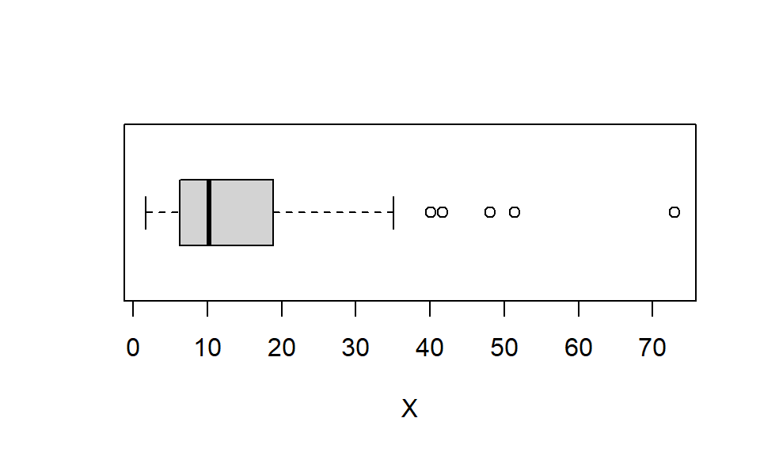
# round(c(iqr = IQR(y)), 0)4E4. This dataset is from an experiment with 80 participants, evenly split into two groups of 40 participants: A control group (group = 0) and an experimental group (group = 1). The results are visualized using boxplots.
Approximate by eye (and brain!):
set.seed(123)
n <- 40
group <- c(rep(0, n), rep(1, n))
y <- rnorm(length(group), (10 + 2*group), (3 - 1*group))
# plot
boxplot(y ~ group, xlab = "Group", ylab = "Outcome", horizontal = FALSE)
4E5. Below is a kernel density plot of a dataset with an arithmetic mean of 26. Which of the following values is closest to the median: 7, 10, 21, 27, 41?
set.seed(123)
y <- 10 * rlnorm(100, mean = log(2), sd = log(2))
plot(density(y), xlab = "X", main = "")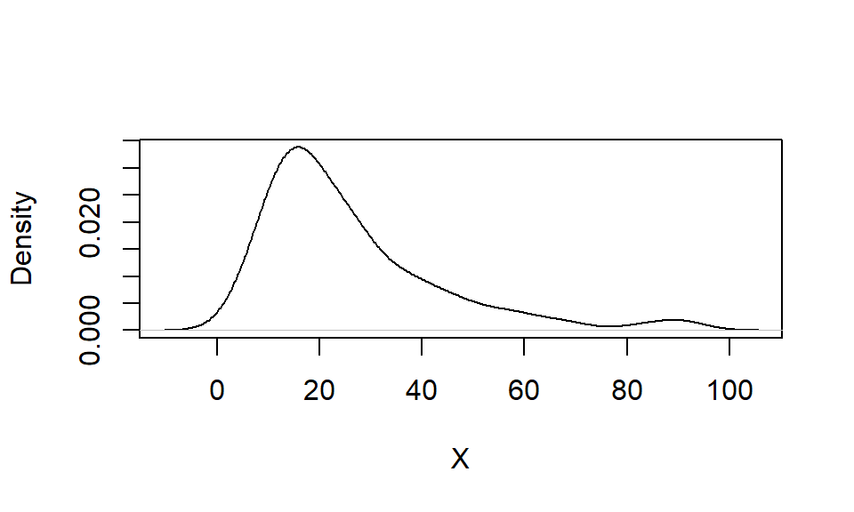
# median(y)4E6. One advantage of a kernel density plot over a histogram is that its shape is not influenced by the choice of bin size. Explain.
4E7. Simulate a sample of reaction times [ms] using this code:
set.seed(123)
rt <- rlnorm(1e3, meanlog = 6, sdlog = 0.69)
Calculate:
4E8. Visualize the distribution of data from 4E7 (vector rt) using a histogram overlaid with a kernel density plot (see examples above). Locate the bins of the histogram at multiples of \(50 \pm 25 \ \ ms\).
4E9. Repeat 4E8 but now with log reaction time log(rt). Make as many bins as in 4E8.
Note: In hist(), the argument breaks = k creates k equally spaced bins.
4E10.
rt and the other for log(rt), using data from 4E7.rt and for log(rt).4E11. Assume that the waist circumference among Swedish middle aged men (40-60 y) is normally distributed with mean = 100 cm and standard deviation = 7 cm.
Calculate the probability that a randomly selected man form this population has a waist circumference …
Hint: A useful function in R is pnorm().
4E12. Below a standard normal distribution. For each panel, approximate by eye (and brain!) the probability that a random observation would fall in the shaded region. Use the 68-95-99.7 rule where appropriate.

4E13. Use R to calculate exact answer (to 5 decimals) for the probabilities in 4E12.
Hint: A useful function in R is pnorm().
4M1.
rt). Here is one way to do it in R: exp(mean(log(rt))).4M2. Student X is taking an exam with 10 multiple choice questions, each with 5 response alternatives of which one is the correct answer. X has no clue and responds randomly.
dbinom() is helpful)4M3. Below is a kernel density plot of a data set.
I realize it’s a somewhat unusual question, but think of it as an exercise in thinking about subjective probability.
set.seed(321)
y1 <- -10 * rlnorm(1000, mean = log(5), sd = log(1.5)) + 199
y2 <- rnorm(100, mean = 100, sd = 10)
y <- c(y1, y2)
plot(density(y), xlab = "X", ylab = "", main = "", axes = FALSE)
axis(1, at = seq(40, 200, 5), cex.axis = 0.8)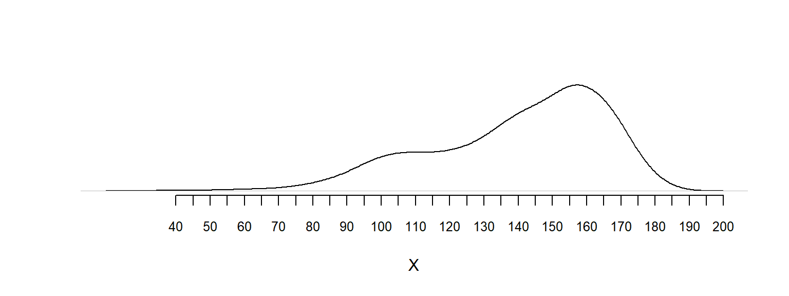
# median(y)
# mean(y)4M4. This is a data set of 7 observations: \(y = [1, 3, 3, 4, 4, 5, 8]\), with
\(mean(y) = 4\).
ynew = (y - mean(y))/(0.1*sd(y)). What is the mean and standard deviation of ynew.4M5. Create a data set with 7 observations that has mean = 100 and sd = 15 (exactly). Describe your method by providing R-code.
4H1. Go back to 4E11 and answer this question: What is the probability that a randomly selected man has a waist-circumference of 96 cm? Answer in a way that also explains the difference between probability and density.
4H2.
4H3. Simulation is fun! And useful! 4E11(d) was maybe too easy (answer = 0.5). A harder version would ask for the waist-circumference interval corresponding to the middle 50 % of the data. My answer is \([95.3, 104.7]\) (rounded to 1 decimal). Use simulation to verify (or falsify) my answer.
4H4. Use pnorm() and qnorm() to calculate the exact interval in 4H3. Report with four decimals.
4H5. Here another simulation exercise:
Draw 10,000 samples of size \(n = 16\) from a normal distribution with \(\mu = 100\) and \(\sigma = 15\). For each sample, calculate a t-value, that is, calculate
\(t = \frac{\mu - \bar{x}}{s_{x}/\sqrt(n)}\),
where \(\bar{x}\) is the sample mean and \(s_{x}\) is the sample standard deviation.
dt() in R to draw this distribution on your histogram from (a).sessionInfo()R version 4.4.2 (2024-10-31 ucrt)
Platform: x86_64-w64-mingw32/x64
Running under: Windows 11 x64 (build 26100)
Matrix products: default
locale:
[1] LC_COLLATE=Swedish_Sweden.utf8 LC_CTYPE=Swedish_Sweden.utf8
[3] LC_MONETARY=Swedish_Sweden.utf8 LC_NUMERIC=C
[5] LC_TIME=Swedish_Sweden.utf8
time zone: Europe/Stockholm
tzcode source: internal
attached base packages:
[1] stats graphics grDevices utils datasets methods base
other attached packages:
[1] MASS_7.3-61
loaded via a namespace (and not attached):
[1] htmlwidgets_1.6.4 compiler_4.4.2 fastmap_1.2.0 cli_3.6.5
[5] tools_4.4.2 htmltools_0.5.8.1 rstudioapi_0.17.1 yaml_2.3.10
[9] rmarkdown_2.29 knitr_1.50 jsonlite_2.0.0 xfun_0.52
[13] digest_0.6.37 rlang_1.1.6 evaluate_1.0.3